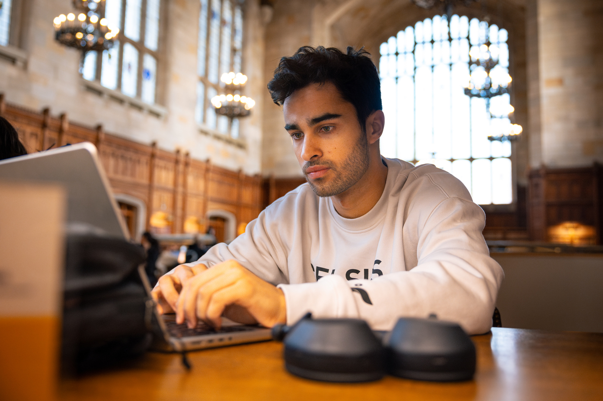

Did you know there are approximately 4,000 students at the University of Michigan who are among the first generation in their family to attend college? While being the first to do anything can be a bit daunting, going off to college is also a major life milestone.
Thankfully, there are useful networks and programs at U-M that can help you connect and thrive on campus. Use this website to help you find the resources you need. Explore your options. Find your community and your way. Make yourself at home.
Am I a first generation college student?

First Generation College Student
At the University of Michigan, undergraduates and graduate students are considered first generation college students if neither parent or guardian has completed a 4-year college or university degree.
This definition includes students with other family members (siblings, cousins, grandparents, etc.) who have completed a four-year degree.
Frist-Gen Events
Explore university events catered for Frist Gen Students
The First-Gen Community Dinner is an opportunity for first-generation college students to connect with each other and learn more about the First-Gen Gateway. There will be a featured resource at this event that is dedicated to supporting first-generation students and staff will be available to answer any questions you might have.
The First-Generation Graduation Celebration Committee will honor the graduates aiming to celebrate the accomplishments, traditions, and experiences of the graduating first-generation student community. All undergraduate, graduate, and doctoral students who are graduating in Fall 2024, Winter 2025, Spring/Summer 2025, or Fall 2025 re invited to register below.
The First Generation Student Gateway serves as a starting point to get connected to resources for first-generation students. The Gateway is linked to several partner offices and is a home for support for first-generation students. The Gateway is for all first-generation undergraduate and graduate students and their allies. You can use the space for:
Finding resources for first-generation students
Finding resources for first-generation students
Connecting to partner offices that support first-generation students
Meeting with First Generation Project Manager Terra Molengraff
Studing space
Meeting space
Hours: Monday - Friday 8:00 AM - 5:00 PM
Location: Office of Academic Multicultural Initiatives (OAMI) on the 3rd floor of the Student Activities Building at 515 E. Jefferson St.
Questions for the First-Gen Gateway Staff? Email us at firstgeninfo@umich.edu